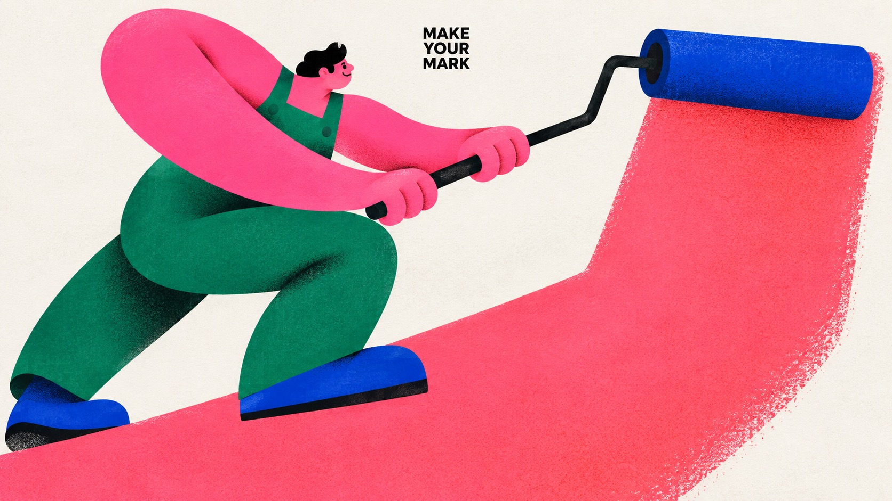
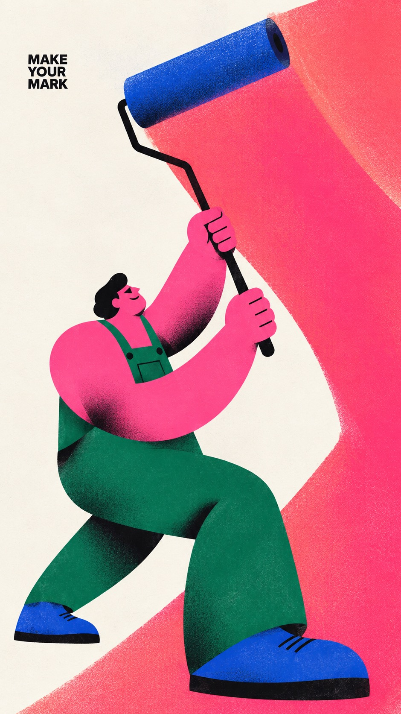
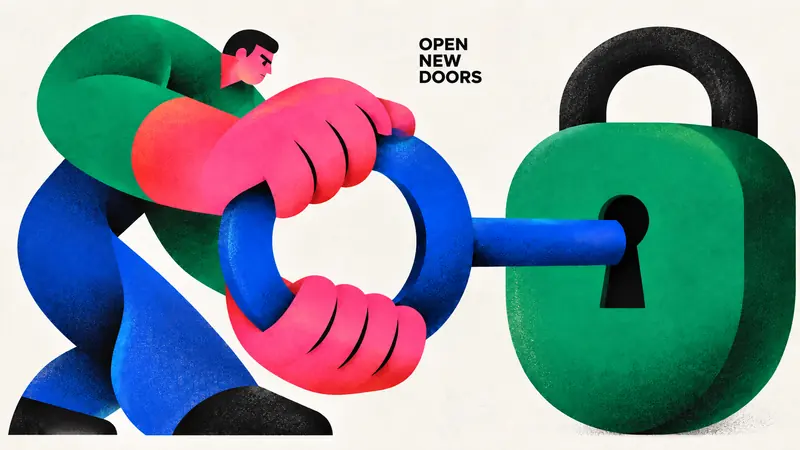
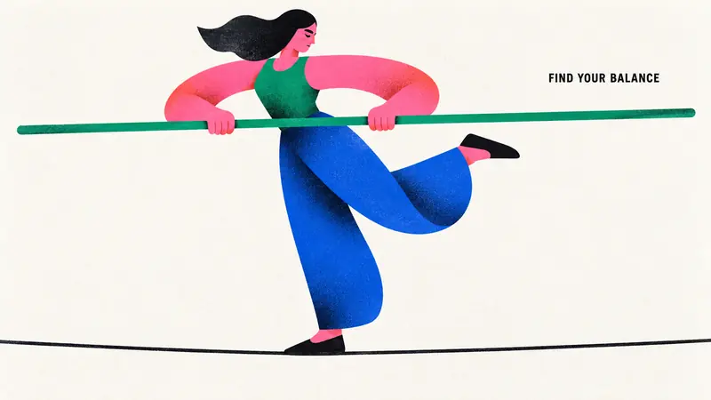
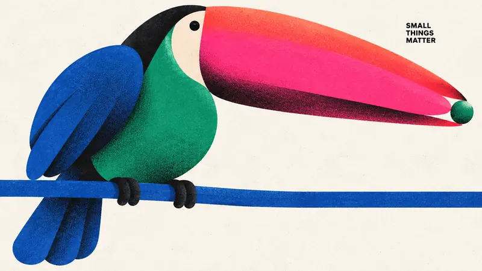

Type Posters · AI image style prompt
Chromatic Gesture Characters — Part 6
Part 6: roller painting, turning a key, tightrope balancing and a toucan in geometric exaggeration and hot-pink clashes.


4 example cases
Same style.json, different subjects. Each case's values are in the examples section of the JSON.



What this style does
Part 6 of Chromatic Gesture Characters: keeps the geometric exaggeration, hot-pink clashes and grainy print feel, building four new structures from roller painting, turning a key, tightrope balancing and a toucan holding fruit.
Signature traits
- Build a monumental, asymmetric character silhouette from few interlocking circles, flattened capsules, wedges, tapered limbs and large flowing contour cuts; enlarge anatomy according to the emotional gesture.
- Use nearly black, radically reduced facial marks and weight-bearing accents; eyes, brows and mouth read as deliberately cut graphic shapes rather than detailed drawing.
- Pair a dominant hot pink or magenta color field with one adjacent warm red or coral gradient and two saturated cool counterweights, on an open off-white paper ground.
- Keep most shapes flat and crisply bounded, with localized dark-to-color airbrushed shading at overlaps or bends and the specified fine print texture; depth must remain graphic.
- Let the character-object interaction carry the poster; sparse small bold black uppercase sans-serif copy occupies a useful pocket of negative space.
- Change pose, gaze, crop, size relationships and title location to make the action legible; a full body, profile crop, enclosing gesture or reclining arrangement are equally valid.
style.json
{
"style_version": "1.0.0",
"style_name": "Chromatic Gesture Characters — Part 6",
"style_slug": "chromatic-gesture-characters-part-06",
"style_summary": "Part 6 of Chromatic Gesture Characters: keeps the geometric exaggeration, hot-pink clashes and grainy print feel, building four new structures from roller painting, turning a key, tightrope balancing and a toucan holding fruit.",
"environment_variables": {
"ASPECT_RATIO": "9:16 or 16:9",
"STYLE_FIDELITY_ANCHORS": "Runtime joined CORE and FLEX anchors from this spec",
"SOURCE_CONTENT_TO_AVOID": "Runtime joined source-specific content exclusions",
"SUBJECT": "New character identity and a small number of theme-bearing objects",
"ACTION": "Readable physical interaction and emotional expression",
"DESIGN_DIRECTION": "The case concept and its visible contribution to hierarchy and silhouette",
"PALETTE_DIRECTION": "Roles of saturated colors within the shared chromatic system",
"MAIN_TEXT": "Only visible wording, exact uppercase spelling without added punctuation",
"PORTRAIT_PLAN": "Composition intention for the 9:16 image",
"LANDSCAPE_PLAN": "Composition intention for the 16:9 image",
"SUBJECT_ACTION": "the readable physical interaction and emotional expression described in ACTION",
"PRODUCT_OR_PROP": "one or two oversized theme-bearing objects that join the character silhouette",
"LOCATION": "edge-to-edge off-white paper with no scene; depth implied only by overlapping shapes",
"BACKGROUND_ELEMENTS": "bare paper gaps, selective grainy airbrushed shadow and the small black caption",
"SECONDARY_TEXT": "none; MAIN_TEXT is the only visible wording",
"ACCENT_SYMBOL": "the minimal black cut-paper facial marks",
"WARDROBE_STYLE": "flat sculptural garment blocks in hot pink, coral red, cobalt and emerald"
},
"style_fidelity_anchors": [
"[CORE] Build a monumental, asymmetric character silhouette from few interlocking circles, flattened capsules, wedges, tapered limbs and large flowing contour cuts; enlarge anatomy according to the emotional gesture.",
"[CORE] Use nearly black, radically reduced facial marks and weight-bearing accents; eyes, brows and mouth read as deliberately cut graphic shapes rather than detailed drawing.",
"[CORE] Pair a dominant hot pink or magenta color field with one adjacent warm red or coral gradient and two saturated cool counterweights, on an open off-white paper ground.",
"[CORE] Keep most shapes flat and crisply bounded, with localized dark-to-color airbrushed shading at overlaps or bends and the specified fine print texture; depth must remain graphic.",
"[CORE] Let the character-object interaction carry the poster; sparse small bold black uppercase sans-serif copy occupies a useful pocket of negative space.",
"[FLEX] Change pose, gaze, crop, size relationships and title location to make the action legible; a full body, profile crop, enclosing gesture or reclining arrangement are equally valid.",
"[FLEX] Use a roller and broad paint swath, a key turning in a padlock, a tightrope and balancing pole, or a toucan bill holding a single berry to change silhouette and negative space.",
"[FLEX] Recompose portrait and landscape around their available width and height; preserve the case's conceptual relationship while changing overlaps and focal placement."
],
"source_content_to_avoid": [
"The original angry seated man with enormous sideways ear, black side-parted hair and crossed short legs",
"The two white pointed steam puffs issuing from nostrils",
"The exact phrase A LITTLE(BIG) MAD. and all source wording",
"The small oval creator stamp, source signature, watermark or brand identity",
"The original green sleeves, blue trousers, pink head and large black shoes repeated in the same placement",
"Part 1 content: saxophone player and puffed cheek, giant pear embrace, umbrella dance, reclining reader and giant book; replace their subjects, actions and wording.",
"Part 2 content: baker stretching dough, bicycle rider, giant dog and walker, frontal photographer and camera; replace their subjects, actions and captions.",
"Part 3 content: topiary gardener and shears, freediver with water ribbon, chess player and giant knight, mover with three-box stack; replace these subjects, actions and captions.",
"Part 4 content: potter and clay vessel, kite flyer, accordion player and stretching cat; replace these subjects, actions and captions.",
"Part 5 content: tea pouring, giant needle and thread, bowling, spiral snail; replace these subjects, actions and captions."
],
"visual_deconstruction": {
"source_observations": "The source enlarges the head and ear into a compressed standing monument. The tiny two-line caption is secondary. Magenta cheeks shift into red forehead; curved black mouth and slanted brows establish anger. Green and cobalt body forms stabilize the composition. White steam marks carve the figure.",
"reusable_system": "Emotion becomes shape, not facial detail. Scale contrast, black cut-shape expressions, complementary saturated blocks, grainy localized gradients and sparse paper space are transferable.",
"scope": "Part 6: continue the established chromatic geometric character series while avoiding all twenty previous subject-action concepts. Explore paint-band movement, lock-and-key engagement, elevated balance and a giant angular bird bill."
},
"composition": {
"hierarchy": "Gesture silhouette first, face/object relationship second, small caption third. Keep visual complexity low.",
"negative_space": "Use paper gaps to separate limbs and objects and to carry the caption; no decorative panel framing.",
"ratio_adaptation": "Use the applicable case plan. Portrait may stack or climb; landscape may unfold or stretch. Do not crop a finished portrait to fill the landscape."
},
"typography": {
"family": "Compact bold grotesk sans-serif, plain black uppercase",
"role": "Small editorial aside, approximately 4 to 7 percent of image height as a complete text block, subordinate to the illustration",
"copy": "Render MAIN_TEXT verbatim once. Line breaks are flexible; no additional punctuation, byline, labels or fabricated logo."
},
"color_palette": {
"paper": "#F3F1EB",
"ink": "#10100F",
"hot_pink": "#F553D2",
"warm_red": "#F42726",
"cobalt": "#293EA1",
"emerald": "#13785D",
"relationships": "Hot pink plus warm gradient against emerald and cobalt; roles may shift per case. Use off-white as active negative space and near-black as graphic weight."
},
"image_treatment": {
"medium": "Raster illustration with the shape economy of cut-paper and airbrushed screen print",
"texture": "Fine, low-contrast stochastic halftone-like ink stipple and paper tooth, approximately 1 to 3 pixels at a 1500-pixel short edge. Most visible inside saturated and black shapes; very faint in the off-white background. Dark grain concentrates in shaded overlaps. No large scratches, folds, distress or coarse canvas weave.",
"edges_and_light": "Crisp contour silhouettes, softly diffused interior gradient shadows limited to overlaps and volume turns; matte ink, no glossy 3D illumination."
},
"design_rules": [
"Each case must turn its action into a distinct silhouette and meaningful negative-space relationship.",
"Keep limb and hand anatomy intentionally simplified but physically readable; no accidental extra appendages.",
"Objects must participate in the gesture at an expressive scale instead of floating as accessories.",
"Keep the exact short caption clearly readable with generous separation from the focal face and object.",
"Produce a full-bleed artwork on off-white paper, without a framed mockup or photographic scene.",
"Keep color count controlled and reduce background detail to marks necessary for the case."
],
"do": [
"Use large asymmetric masses with small facial marks.",
"Use white gaps as structural parts of the gesture.",
"Recompose both ratios deliberately.",
"Keep texture integrated with ink and preserve clean silhouette contours."
],
"avoid": [
"Copying the source character, angry pose, steam icons or signature.",
"Photorealistic people, shiny toy renderings, generic cute mascots or outlined cartoons.",
"Huge headline typography, dense labels, decorative stars and extra logos.",
"Four identical centered seated poses with different accessories."
],
"prompt_template": "Use case: stylized-concept. Create one finished {ASPECT_RATIO} editorial character poster in the Chromatic Gesture Characters visual system. This is a standalone raster artwork, edge-to-edge off-white paper, with no surrounding mockup.\n\nPRIORITIZED STYLE:\n{STYLE_FIDELITY_ANCHORS}\n\nSUBJECT: {SUBJECT}\nACTION AND EMOTION: {ACTION}\nDESIGN INTENTION: {DESIGN_DIRECTION}\nCOLOR ROLES: {PALETTE_DIRECTION}\n\nRATIO ADAPTATION: if 9:16, follow this portrait direction: {PORTRAIT_PLAN} If 16:9, follow this landscape direction: {LANDSCAPE_PLAN} Use only the plan appropriate to the requested ratio. Make a coherent single image with natural paper margins.\n\nTEXT: Render exactly \"{MAIN_TEXT}\" once, without quotation marks or punctuation. Plain bold black uppercase grotesk sans-serif, small editorial caption rather than headline. Flexible line breaks in a meaningful empty pocket. No other text or logo.\n\nPRINT FINISH: Fine, low-contrast stochastic halftone-like ink stipple and paper tooth, about 1 to 3 pixels at a 1500-pixel short edge, most visible inside saturated and black shapes, very faint in the off-white background. Dark grain concentrates in shaded overlaps. Crisp silhouette edges; selective soft dark-to-color spray gradients inside overlapping shapes. Matte ink, predominantly flat graphic forms; no glossy 3D rendering or coarse distress.\n\nSOURCE CONTENT TO REPLACE:\n{SOURCE_CONTENT_TO_AVOID}\n\nEXCLUSIONS: no additional words, signatures, logos, watermark, angry source character, steam puffs, extra fingers or limbs, realistic skin, outlined cartoon look, 3D plastic, photographic set, border, dense background, coarse canvas weave, oversized headline or gratuitous decoration.",
"negative_prompt": "Source angry man, steam puffs, original caption, creator oval stamp, copied identity, watermark, logo, extra text, punctuation, extra limbs, disconnected grips, glossy 3D toy, photorealism, outlined cartoon, coarse weave, distress scratches, huge headline, clutter, frames, poster mockup; no previous saxophone, pear, umbrella, book, dough, bicycle, dog walker, camera, topiary, diver, chess knight or box-stack concepts. No pottery wheel, kite, accordion or stretching cat. No tea pouring, needle thread, bowling or snail.",
"examples": [
{
"case_name": "leave-a-mark",
"values": {
"SUBJECT": "An exuberant adult painter with a small pink face, near-black hair, emerald overalls and monumental hot-pink arms, pushing one oversized cobalt paint roller on a thin black bent handle across an off-white surface.",
"ACTION": "Two pink hands grip the roller handle below the roller head. The cylinder visibly touches the leading edge of a broad coral-pink painted swath; it leaves one bold angular band behind. A raised knee and leaning torso show the push. No paint can, brushes, ladder or room.",
"DESIGN_DIRECTION": "Make the broad graphic paint band part of the composition, sweeping up the paper in a bent path; the blue cylinder is the moving boundary between painted and unpainted paper. Curved arms oppose the band angles. The little head peers beside the handle; no lettering inside the painted band.",
"PALETTE_DIRECTION": "Hot-pink arms, coral-pink paint swath, cobalt roller and shoes, emerald overalls, near-black handle and reduced face/hair, open off-white paper.",
"MAIN_TEXT": "MAKE YOUR MARK",
"PORTRAIT_PLAN": "The painter stands low beside a broad rising pink swath. Blue roller contacts the upper leading edge; its bent handle leads down to two clearly gripping hands. Keep the roller, hands and face visible; small exact caption in an upper side paper pocket.",
"LANDSCAPE_PLAN": "Painter leans from the left with handle extending toward the right; blue roller contacts the far end of a broad horizontal coral swath. Both hands on handle, roller contact clear. Small caption in white upper gap. Keep band as graphic shape, no wall-room perspective."
}
},
{
"case_name": "turn-the-key",
"values": {
"SUBJECT": "An intent adult locksmith with a small pink face and black cropped hair, emerald sleeves, cobalt trousers and huge hot-pink hands, turning one oversized cobalt key in a giant emerald padlock with a broad rounded body and simple black U-shaped shackle.",
"ACTION": "Two simplified hands hold opposite sides of the large ring-shaped key bow and rotate it. A straight blue shaft leads to the padlock keyhole, visibly inserted at the center; the padlock body stays separate from the hands. The focused face looks toward this connection. No door, extra keys, writing or chain.",
"DESIGN_DIRECTION": "The open circular key bow creates a bold white window between the two pink hands, contrasting with the rounded solid lock body and U-shaped shackle. The key shaft is a clean rigid bridge to the lock, not a decorative floating prop. Only one key and one lock.",
"PALETTE_DIRECTION": "Hot-pink palms and coral bends, cobalt key and trousers, emerald padlock and sleeves, black shackle/hair/face/keyhole, off-white paper.",
"MAIN_TEXT": "OPEN NEW DOORS",
"PORTRAIT_PLAN": "Stack large U-shaped shackle and green lock high toward right, giant blue key ring lower left with two pink hands gripping its outer rim. Angle shaft upward into lock keyhole, visibly continuous. Small face beside ring, caption in upper-left paper. Keep the full shackle and ring opening.",
"LANDSCAPE_PLAN": "Large green lock at right, blue key bow at left framed by pink hands, shaft crosses the middle directly into keyhole. Tiny focused face above the bow. Complete U-shaped shackle and circular bow visible; small caption in the upper middle paper pocket."
}
},
{
"case_name": "find-the-balance",
"values": {
"SUBJECT": "An adult tightrope walker with tiny pink face, black swept hair, exaggerated hot-pink curved arms, emerald fitted top, cobalt wide trousers and black flat shoes, holding one long straight emerald balancing pole.",
"ACTION": "The walker balances on one taut black horizontal rope, one shoe planted on the rope and the other leg bent back above it. Two hands hold the pole at separated points near its middle. Calm concentrated face; no harness, circus tent, audience or scenery.",
"DESIGN_DIRECTION": "The long pole and thin rope form two calm horizontal axes against a large bent pink arm and lifted blue leg. Use a generous white pocket between the body and the bent leg to convey balance. The support shoe meets the rope exactly, with only one body and two arms.",
"PALETTE_DIRECTION": "Hot-pink arms and face warmed to coral at bends, cobalt trousers, emerald shirt and straight pole, near-black hair/shoes/rope/minimal expression, off-white paper.",
"MAIN_TEXT": "FIND YOUR BALANCE",
"PORTRAIT_PLAN": "The figure rises tall above a low rope, one lifted knee creates an asymmetric blue wedge. Pole spans upper-middle width with both tips inside paper margins, hands gripping near center. Show precise shoe-to-rope contact; caption in upper-side paper.",
"LANDSCAPE_PLAN": "The balancing pole spans most of the width with both tips visible; walker offset slightly left, one shoe on the taut rope low across the page and the other leg lifted to the right. Leave clear white gaps around limbs. Small caption high at right, no extra motion marks."
}
},
{
"case_name": "little-treasure",
"values": {
"SUBJECT": "One oversized stylized toucan in profile with a monumental hot-pink and coral-red bill, emerald rounded chest, cobalt folded wing and long tail, tiny near-black eye and two near-black feet perched on a simple cobalt horizontal branch.",
"ACTION": "The toucan gently holds one small emerald berry at the tip of its closed giant bill, with a slight notch between upper and lower bill indicating grip. The head tilts toward the berry. Two feet wrap visibly over the branch; no leaves, fruit pile, nest or other birds.",
"DESIGN_DIRECTION": "Make the giant tapered wedge bill the dominant mass, ending in a tiny berry. Rounded body and folded wing counterbalance it; a little eye contrasts with the immense bill. The small berry is the only secondary object, expressing attention through scale contrast.",
"PALETTE_DIRECTION": "Hot-pink bill with coral-red upper plane and dark granular underside, emerald torso and berry, cobalt wing/tail/branch, black eye and two simple feet, off-white paper.",
"MAIN_TEXT": "SMALL THINGS MATTER",
"PORTRAIT_PLAN": "Stack compact body, folded wing and long tail vertically above and below the low branch while giant bill points across the upper portion. Keep bill tip, berry, both feet and tail end inside canvas with paper margins. Small exact caption near upper-side white pocket.",
"LANDSCAPE_PLAN": "Bird body left, enormous wedge bill projects to the right toward one small berry held at its tip. Branch low, both feet visibly clasp it, tail sweeps down-left fully inside frame. Small caption above the bill in open paper; keep berry separate and legible."
}
}
],
"category": "Type Posters"
}